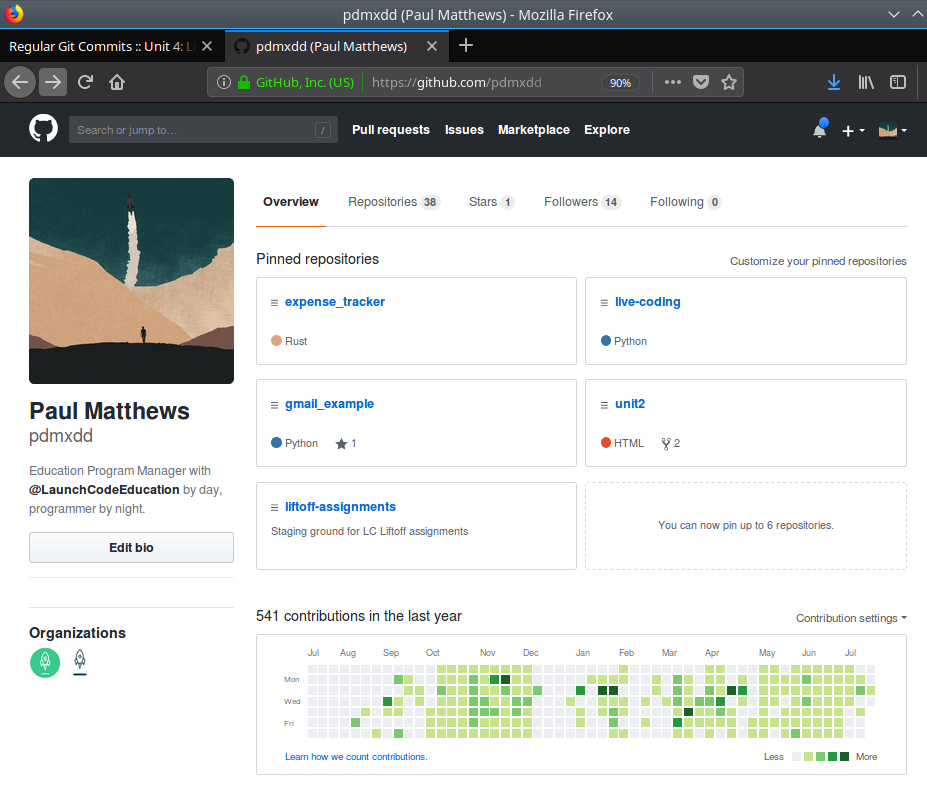

Regular Git Commits
Version Control is an invaluable skill as a devleoper. It allows you keep track of the different versions of your project. As a record of everything you have done it provides some useful benefits.
- Review code you, or other developers wrote in the past
- Undo mistakes you make in your project
- Create branches that give you a clean space to work on new ideas without jeopardizing the current state of your project
In Liftoff we will be using Git as our Version Control Software. If you completed LC101 you were introduced to the basics of the Git workflow: staging (git add), commiting (git commit), and pushing to a remote repository (git push).
If you feel a little rusty on some of the basics take a look at the Git Handbook created by GitHub!
Commit Yourself to Using Git
You won't get the benefits of Git listed above, if you don't use it!
You should incorporate Git into your coding work. When you've finished a user story you should stage, commit, and push. When you've squashed a bug you should stage, commit, and push. If you are working before bed, before you call it a night you should stage, commit, and push. If you are working before work, you should stage, commit, and push before you have to leave. The more versions you have of your project, the more places you can revert back to.
As you advance in your career you will learn more appropriate times to stage, commit, and push. Most teams, or companies define when their developers should stage, commit, and push. Some companies will want you to only commit if you have finished a user story, others may want you to create a branch for everything you do, and so staging, committing, and pushing is left up to you, but you are only allowed to merge your branch when you've met certain conditions.
As you are working on your personal project you can and should commit as often as you'd like
Hiring Managers Love Active GitHub Profiles
Every time you make a contribution to your GitHub profile (pushing to a master branch, merging a branch into master, creating a new repository, etc) GitHub records your contribution and displays it to the public.
Let's take a look.

As you can see Paul has made 541 contributions in the last year. You can see a heatmap showing when and how many contributions Paul made over the past year. From this information you can see he regularly codes. He has dedicated much of his time to programming and very rarely does a full week go by where he doesn't contribute in some way. Most weeks he contributes multiple things.
Everyone's profile looks the same when they start, but by regularly staging, committing, and pushing work to your project repository you will start to build up contributions. Set a goal for yourself to contribute to your GitHub account a certain number of times each week, and by the end of this class you will have the start of a GitHub profile that hiring managers are interested in.
You will learn more about making a good GitHub profile in the prep work around Online Profiles.